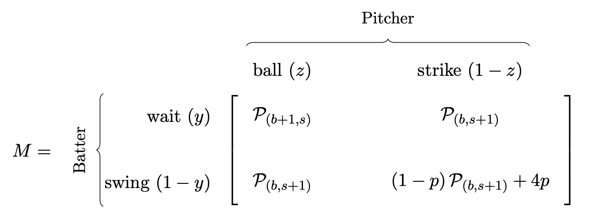

Any ad-bat we are in is described by state $(b,s)$, where $b$ is current ball count, and $s$ is current strike count. We start at $(0,0)$ for the first pitch, and ends when $b=4$ (payoff of $1$), $s=3$ (payoff of $0$), or a home run (payoff of $4$).
$$\mathcal{P}_{(b,s)}=\text{Expected Payoff from state }(b,s)$$
And so we can summarize the payoffs of each scenario in matrix form. This is a two player zero-sum game, and so suppose the batter adopts the following strategy: he can wait with probability $y$ or swing with probability $1-y$. Similarly, the pitcher chooses ball with probability $z$, or strikes with probability $1-z$.

And thus the batter's expected payoff is simply:
\begin{align}
\mathcal{P}_{(b,s)} & = z\left[y\mathcal{P}_{(b+1,s)}+(1-y)\mathcal{P}_{(b,s+1)}\right]+(1-z)\left[y\mathcal{P}_{(b,s+1)}+(1-y)\mathcal{P}_{(b,s+1)} + 4p\right] \label{eq:einstein}
\end{align}
In game theory, optimal mixed strategies exist for both players and these strategies should occur at an equilibrium point, since neither player should be able to increase their payoff by unilaterally changing their strategy. The idea is to randomize choices so that the opponent is indifferent between their pure strategies. Let's find the indifference conditions for both the batter and the pitcher:
$\textbf{Batter:}$ If the batter always waits, his expected payoff is shown below. If the batter always swings, his expected payoff is shown below.
\begin{align*}
\mathbb{E}[\text{Wait}] & = z\mathcal{P}_{(b+1,s)} +(1-z)\mathcal{P}_{(b,s+1)}
\\ \mathbb{E}[\text{Swing}] & = z\mathcal{P}_{(b,s+1)} + (1-z)\left[\mathcal{P}_{(b,s+1)} + 4p\right]
\end{align*}
Since the pitcher's goal is to minimize the payoff of the batter, he should select probability $z$ such that the batter can not exploit either pure strategy, and thus the above two expected payoffs are equal. The value of such a $z$ is given as:
$$z\mathcal{P}_{(b+1,s)} +(1-z)\mathcal{P}_{(b,s+1)}=z\mathcal{P}_{(b,s+1)} + (1-z)\left[\mathcal{P}_{(b,s+1)} + 4p\right]$$
Solving for $z$:
$$z=\frac{\left[\mathcal{P}_{(b,s+1)} + 4p\right]-\mathcal{P}_{(b,s+1)}}{\mathcal{P}_{(b+1,s)} +\left[\mathcal{P}_{(b,s+1)} + 4p\right]-2\mathcal{P}_{(b,s+1)}}$$
$\textbf{Pitcher:}$ If the pitcher always selects ball, his expected payoff is shown below. If the pitcher always selects strike, his expected payoff is shown below.
\begin{align*}
\mathbb{E}[\text{Ball}] & = y\mathcal{P}_{(b+1,s)} +(1-y)\mathcal{P}_{(b,s+1)}
\\ \mathbb{E}[\text{Strike}] & = y\mathcal{P}_{(b,s+1)} + (1-y)\left[\mathcal{P}_{(b,s+1)} + 4p\right]
\end{align*}
And so the batter chooses a value of $y$ such that these are equal, and we notice we get the same value as we did for $z$, i.e:
$$y=z=\frac{\left[\mathcal{P}_{(b,s+1)} + 4p\right]-\mathcal{P}_{(b,s+1)}}{\mathcal{P}_{(b+1,s)} +\left[\mathcal{P}_{(b,s+1)} + 4p\right]-2\mathcal{P}_{(b,s+1)}}$$
We can plug these values back into Eq. \ref{eq:einstein}, or simply use the value/expected payoff formula for a two-player zero-sum game that I found
here, and we get:
\begin{align}\mathcal{P}_{(b,s)}=\frac{\mathcal{P}_{(b+1,s)} \left[\mathcal{P}_{(b,s+1)} + 4p\right]-\left[\mathcal{P}_{(b,s+1)}\right]^2}{\mathcal{P}_{(b+1,s)}+\left[\mathcal{P}_{(b,s+1)} + 4p\right]-2\mathcal{P}_{(b,s+1)}}\label{eq:final}\end{align}
Is a recursive formula for the expected payoff, with the constraints $\mathcal{P}_{(4,s)}=1$ and $\mathcal{P}_{(b,3)}=0$.
Now let's define:
$$\mathcal{Q}_{(b,s)}=\text{Probability of Reaching state }(3,2)\;\text{from state }(i,j)$$
Under constraints:
\begin{align*}
\mathcal{Q}_{(4,s)}=0 & & \mathcal{Q}_{(b,3)}=0 & & \mathcal{Q}_{(3,2)}=1
\end{align*}
And using matrix $M$, we make the following observations:
- With probability $yz$, the result is a ball added, so next state is $(b+1,s)$
- With probability $(1-z)(1-y)p$, we have a home run, which will never contribute to getting full count.
- With probability $1-yz-(1-z)(1-y)p$, the result is a strike added, so next state is $(b,s+1)$.
And so:
$$\mathcal{Q}_{b,s}=yz\mathcal{Q}_{b+1,s}+(1-yz-(1-z)(1-y))\mathcal{Q}_{b,s+1}$$
And so our goal is to find $q(p)=\mathcal{Q}_{0,0}(p)$. And this is when we'll have to use code
The recursive equations for $\mathcal{P}_{(b,s)}$ and $\mathcal{Q}_{(b,s)}$ are implemented numerically in Python.
For a fixed value of $p$, the function $\texttt{compute_q_for_p(p)}$ computes $\mathcal{P}_{(b,s)}$ and the optimal mixed strategies $y(b,s)$ and $z(b,s)$ for every state $(b,s)$ using the closed-form equilibrium equations for $y$ and $\mathcal{P}_{(b,s)}$ as above. These values are filled backwards from the terminal states $\mathcal{P}_{(4,s)}=1$ and $\mathcal{P}_{(b,3)}=0$ toward the initial state $(0,0)$. Once $\mathcal{P}_{(b,s)}$, $y(b,s)$, and $z(b,s)$ are known, the code computes $\mathcal{Q}_{(b,s)}$ recursively according to
$$
\mathcal{Q}_{(b,s)} = y(b,s)z(b,s)\mathcal{Q}_{(b+1,s)} + \big(1 - y(b,s)z(b,s) - (1-z(b,s))(1-y(b,s))p\big)\mathcal{Q}_{(b,s+1)},
$$
with boundary conditions $\mathcal{Q}_{(4,s)}=0$, $\mathcal{Q}_{(b,3)}=0$, and $\mathcal{Q}_{(3,2)}=1$.
The desired quantity is then $q(p)=\mathcal{Q}_{(0,0)}(p)$. Finally, the function $\texttt{maximize_q()}$ performs a golden-section search over $p\in[0,1]$ to find
$$
p^* = \arg\max_{p\in[0,1]} q(p), \qquad q^* = q(p^*),
$$
which correspond to the home-run probability and the maximal chance of reaching a full count under optimal play.
import math
def compute_q_for_p(p):
P = [[0.0]*4 for _ in range(5)]
y = [[0.0]*3 for _ in range(4)]
z = [[0.0]*3 for _ in range(4)]
# Constraints
for j in range(3): P[4][j] = 1.0
for i in range(5): P[i][3] = 0.0
for i in range(3, -1, -1):
for j in range(2, -1, -1):
a = P[i+1][j]
b = P[i][j+1]
h = (1.0 - p)*b + p*4.0
denom = (a + h - 2.0*b)
if denom == 0.0:
P[i][j] = b
y[i][j] = z[i][j] = 0.5
else:
yij = (h - b) / denom
zij = yij
pij = (a*h - b*b) / denom
y[i][j] = 0.0 if yij < 0.0 else (1.0 if yij > 1.0 else yij)
z[i][j] = 0.0 if zij < 0.0 else (1.0 if zij > 1.0 else zij)
P[i][j] = pij
Q = [[0.0]*4 for _ in range(5)]
Q[3][2] = 1.0
for i in range(3, -1, -1):
for j in range(2, -1, -1):
if i == 3 and j == 2:
continue
yy = y[i][j]
zz = z[i][j]
p_ball_wait = zz * yy
p_hr = (1.0 - zz) * (1.0 - yy) * p
p_strike_inc = 1.0 - p_ball_wait - p_hr
Q_ball = 0.0 if i+1 == 4 else Q[i+1][j]
Q_strike = 0.0 if j+1 == 3 else Q[i][j+1]
Q[i][j] = p_ball_wait * Q_ball + p_strike_inc * Q_strike
return Q[0][0]
def maximize_q():
invphi = (math.sqrt(5) - 1) / 2
invphi2 = (3 - math.sqrt(5)) / 2
a, b = 0.0, 1.0
c = a + invphi2*(b-a)
d = a + invphi*(b-a)
qc = compute_q_for_p(c)
qd = compute_q_for_p(d)
for _ in range(60):
if qc < qd:
a = c
c, qc = d, qd
d = a + invphi*(b-a)
qd = compute_q_for_p(d)
else:
b = d
d, qd = c, qc
c = a + invphi2*(b-a)
qc = compute_q_for_p(c)
p_star = 0.5*(a+b)
q_star = compute_q_for_p(p_star)
return p_star, q_star
if __name__ == "__main__":
p_star, q_star = maximize_q()
print(f"p = {p_star:.10f}")
print(f"q = {q_star:.10f}")
Which gives:
$$\texttt{p = 0.2269732289}\;\;\;\;\;\text{and}\;\;\;\;\;\boxed{\texttt{q = 0.2959679934}}$$